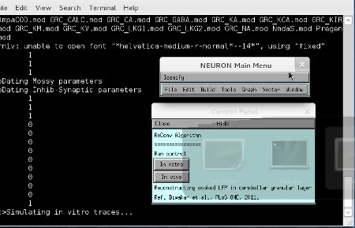

Reconstructing evoked LFP in cerebellar granular layer using jittered repetitive convolution (ReConv) This is the README for ReConv model for the paper Shyam Diwakar, Paola Lombardo, Sergio Solinas, Giovanni Naldi, Egidio D'Angelo. "Local field potential modeling predicts dense activation in cerebellar granule cells clusters under LTP and LTD control", PLoS ONE, 2011 6(7):e21928 Implementation was done by Shyam Diwakar in Neuron and Matlab. Author acknowledges Harilal Parasuram for his help in editing the code to autogenerate data traces. Usage instructions: Auto-launch from ModelDB or download and extract the archive. Then under: ---- MSWIN run mknrndll, cd to the archive and make the nrnmech.dll. Then double click on the mosinit.hoc file. When the "Control Panel" menu pops, click on invitro first and restart Start.hoc and click on invivo menu to make data files. Run "weighsum.m" inside data/invitro and "weighavg.m" inside data/invivo to generate evoked LFP signal. ---- MAC OS X Drag and drop the GrC folder onto the mknrndll icon. Drag and drop the mosinit.hoc file onto the nrngui icon. When the "Control Panel" menu pops, click on invitro first and restart Start.hoc and click on invivo menu to make data files. Run "weighsum.m" inside data/invitro and "weighavg.m" inside data/invivo to generate evoked LFP signal. ---- Linux/Unix Change directory to the GrC folder. run nrnivmodl. Then type nrngui mosinit.hoc When the "Control Panel" menu pops, click on invitro first and restart Start.hoc and click on invivo menu to make data files. Run "weighsum.m" inside data/invitro and "weighavg.m" inside data/invivo to generate evoked LFP signal. ----  Attention: The GrC model used here was published as (Diwakar et al., 2009) Shyam Diwakar, Jacopo Magistretti, Mitchell Goldfarb, Giovanni Naldi, and Egidio D'Angelo. Axonal Na+ channels ensure fast spike activation and back-propagation in cerebellar granule cells. J Neurophysiol (December 10, 2008). doi:10.1152/jn.90382.2008 Available at http://senselab.med.yale.edu/ModelDb/showmodel.asp?model=116835